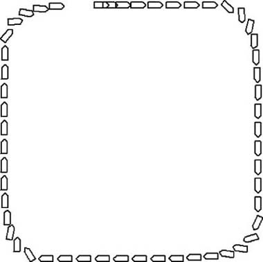
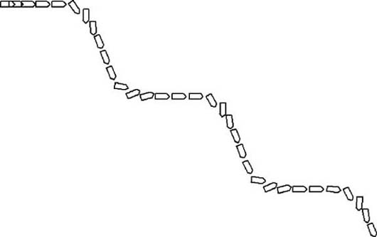
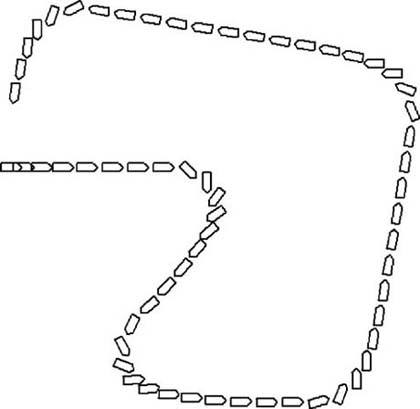

|
|
< Day Day Up > |
|
3.3 Pattern Movement in Physically Simulated EnvironmentsSo far in this chapter we discussed how to implement patterned movement in environments where you can instruct your game characters to take discrete steps or turns; but what about physically simulated environments? Surely you can take advantage of the utility of pattern movement in physically simulated environments as well. The trouble is that the benefit of using physically simulated environments—namely, letting the physics take control of movement—isn't conducive to forcing a physically simulated object to follow a specific pattern of movement. Forcing a physically simulated aircraft, for example, to a specific position or orientation each time through the game loop defeats the purpose of the underlying physical simulation. In physically simulated environments, you don't specify an object's position explicitly during the simulation. So, to implement pattern movement in this case, you need to revise the algorithms we discussed earlier. Specifically, rather than use patterns that set an object's position and orientation each time through the game loop, you need to apply appropriate control forces to the object to coax it, or essentially drive it, to where you want it to go. You saw in the second example in Chapter 2 how we used steering forces to make the predator chase his prey. You can use these same steering forces to drive your physically simulated objects so that they follow some pattern. This is, in fact, an approximation to simulating an intelligent creature at the helm of such a physically simulated vehicle. By applying control forces, you essentially are mimicking the behavior of the driver piloting his vehicle in some pattern. The pattern can be anything—evasive maneuvers, patrol paths, stunts—so long as you can apply the appropriate control forces, such as thrust and steering forces. Keep in mind, however, that you don't have absolute control in this case. The physics engine and the model that governs the capabilities—such as speed and turning radius, among others—of the object being simulated still control the object's overall behavior. Your input in the form of steering forces and thrust modulation, for example, is processed by the physics engine, and the resulting behavior is a function of all inputs to the physics engine, not just yours. By letting the physics engine maintain control, we can give the computer-controlled object some sense of intelligence without forcing the object to do something the physics model does not allow. If you violate the physics model, you run the risk of ruining the immersive experience realistic physics create. Remember, our goal is to enhance that immersiveness with the addition of intelligence. To demonstrate how to implement path movement in the context of physically simulated environments, we're going to use as a basis the scenario we described in Chapter 2 for chasing and intercepting in continuous environments. Recall that this scenario included two vehicles that we simulated using a simple two-dimensional rigid-body simulation. The computer controlled one vehicle, while the player controlled the other. In this chapter, we're going to modify that example, demonstration program AIDemo2-2, such that the computer-controlled vehicle moves according to predefined patterns. The resulting demonstration program is entitled AIDemo3-2, and you can download it from this book's Web site. The approach we'll take in this example is very similar to the algorithms we discussed earlier. We'll use an array to store the pattern information and then step through this array, giving the appropriate pattern instructions to the computer-controlled vehicle. There are some key differences between the algorithms we discussed earlier and the one required for physics-based simulations. In the earlier algorithms, the pattern arrays stored discrete movement information—take a step left, move a step forward, turn right, turn left, and so on. Further, each time through the game loop the pattern array index was advanced so that the next move's instructions could be fetched. In physics-based simulations, you must take a different approach, which we discuss in detail in the next section. 3.2.1 Control StructuresAs we mentioned earlier, in physics-based simulations you can't force the computer-controlled vehicle to make a discrete step forward or backward. Nor can you tell it explicitly to turn left or right. Instead, you have to feed the physics engine control force information that, in effect, pilots the computer-controlled vehicle in the pattern you desire. Further, when a control force—say, a steering force—is applied in physics-based simulations, it does not instantaneously change the motion of the object being simulated. These control forces have to act over time to effect the desired motion. This means you don't have a direct correspondence between the pattern array indices and game loop cycles; you wouldn't want that anyway. If you have a pattern array that contains a specific set of instructions to be executed each time you step through the simulation, the pattern arrays would be huge because the time steps typically taken in a physics-based simulation are very small. To get around this, the control information contained in the pattern arrays we use here also contains information so that the computer knows how long, so to speak, each set of instructions should be applied. The algorithm works like this: the computer selects the first set of instructions from the pattern array and applies them to the vehicle being controlled. The physics engine processes those instructions each time step through the simulation until the conditions specified in the given set of instructions are met. At that point the next set of instructions from the pattern array are selected and applied. This process repeats all the way through the pattern array, or until the pattern is aborted for some other reason. The code in Example 3-13 shows the pattern control data structure we set up for this example. Example 3-13. Pattern movement control data structure
struct ControlData {
bool PThrusterActive;
bool SThrusterActive;
double dHeadingLimit;
double dPositionLimit;
bool LimitHeadingChange;
bool LimitPositionChange;
};
Be aware that this control data will vary depending on what you are simulating in your game and how its underlying physics model works. In this case, the vehicle we're controlling is steered only by bow thruster forces. Thus, these are the only two control forces at our disposal with which we can implement some sort of pattern movement. Therefore, the data structure shown in Example 3-13 contains two boolean members, PThrusterActive and SThrusterActive, which indicate whether each thruster should be activated. The next two members, dHeadingLimit and dPositionLimit, are used to determine how long each set of controls should be applied. For example, dHeadingLimit specifies a desired change in the vehicle's heading. If you want a particular instruction to turn the vehicle 45 degrees, you set this dHeadingLimit to 45. Note that this is a relative change in heading and not an absolute orientation. If the flag LimitHeadingChange is set to true, dHeadingLimit is checked each time through the simulation loop while the given pattern instruction is being applied. If the vehicle's heading has changed sufficiently relative to its last heading before this instruction was applied, the next instruction should be fetched. Similar logic applies to dPositionLimit. This member stores the desired change in position—that is, distance traveled relative to the position of the vehicle before the given set of instructions was applied. If LimitPositionChange is set to true, each time through the simulation loop the relative position change of the vehicle is checked against dPositionChange to determine if the next set of instructions should be fetched from the pattern array. Before proceeding further, let us stress that the pattern movement algorithm we're showing you here works with relative changes in heading and position. The pattern instructions will be something such as move forward 100 ft, then turn 45 degrees to the left, then move forward another 100 ft, then turn 45 degrees to the right, and so on. The instructions will be absolute: move forward until you reach position (x, y)0, then turn until you are facing southeast, then move until you reach position (x, y)1, then turn until you are facing southwest, and so on. Using relative changes in position and heading enables you to execute the stored pattern regardless of the location or initial orientation of the object being controlled. If you were to use absolute coordinates and compass directions, the patterns you use would be restricted near those coordinates. For example, you could patrol a specific area on a map using some form of pattern, but you would not be able to patrol any area on a map with the specific pattern. The latter approach, using absolute coordinates, is consistent with the algorithm we showed you in the previous tile-based example. Further, such an approach is in line with waypoint navigation, which has its own merits, as we discuss in later chapters. Because we're using relative changes in position and heading here, you also need some means of tracking these changes from one set of pattern instructions to the next. To this end, we defined another structure that stores the changes in state of the vehicle from one set of pattern instructions to the next. Example 3-14 shows the structure. Example 3-14. State change tracking structure
struct StateChangeData {
Vector InitialHeading;
Vector InitialPosition;
double dHeading;
double dPosition;
int CurrentControlID;
};
The first two members, InitialHeading and InitialPosition, are vectors that store the heading and position of the vehicle being controlled at the moment a set of pattern instructions is selected from the pattern array. Every time the pattern array index is advanced and a new set of instructions is fetched, these two members must be updated. The next two members, dHeading and dPosition, store the changes in position and heading as the current set of pattern instructions is being applied during the simulation. Finally, CurrentControlID stores the current index in the pattern array, which indicates the current set of pattern control instructions being executed. 3.2.2 Pattern DefinitionNow, to define some patterns, you have to fill in an array of ControlData structures with appropriate steering control instructions corresponding to the desired movement pattern. For this example, we set up three patterns. The first is a square pattern, while the second is a zigzag pattern. In an actual game, you could use the square pattern to have the vehicle patrol an area bounded by the square. You could use the zigzag pattern to have the vehicle make evasive maneuvers, such as when Navy ships zigzag through the ocean to make it more difficult for enemy submarines to attack them with torpedoes. You can define control inputs for virtually any pattern you want to simulate; you can define circles, triangles, or any arbitrary path using this method. In fact, the third pattern we included in this example is an arbitrarily shaped pattern. For the square and zigzag patterns, we set up two global arrays called PatrolPattern and ZigZagPattern, as shown in Example 3-15. Example 3-15. Pattern array declarations#define_PATROL_ARRAY_SIZE 8 #define _ZIGZAG_ARRAY_SIZE 4 ControlData PatrolPattern[_PATROL_ARRAY_SIZE]; ControlData ZigZagPattern[_ZIGZAG_ARRAY_SIZE]; StateChangeData PatternTracking; As you can see, we also defined a global variable called PatternTracking that tracks changes in position and heading as these patterns get executed. Examples 3-16 and 3-17 show how each of these two patterns is initialized with the appropriate control data. We hardcoded the pattern initialization in this demo; however, in an actual game you might prefer to load in the pattern data from a data file. Further, you can optimize the data structure using a more concise encoding, as opposed to the structure we used here for the sake of clarity. Example 3-16. Square patrol pattern initialization
PatrolPattern[0].LimitPositionChange = true;
PatrolPattern[0].LimitHeadingChange = false;
PatrolPattern[0].dHeadingLimit = 0;
PatrolPattern[0].dPositionLimit = 200;
PatrolPattern[0].PThrusterActive = false;
PatrolPattern[0].SThrusterActive = false;
PatrolPattern[1].LimitPositionChange = false;
PatrolPattern[1].LimitHeadingChange = true;
PatrolPattern[1].dHeadingLimit = 90;
PatrolPattern[1].dPositionLimit = 0;
PatrolPattern[1].PThrusterActive = true;
PatrolPattern[1].SThrusterActive = false;
PatrolPattern[2].LimitPositionChange = true;
PatrolPattern[2].LimitHeadingChange = false;
PatrolPattern[2].dHeadingLimit = 0;
PatrolPattern[2].dPositionLimit = 200;
PatrolPattern[2].PThrusterActive = false;
PatrolPattern[2].SThrusterActive = false;
PatrolPattern[3].LimitPositionChange = false;
PatrolPattern[3].LimitHeadingChange = true;
PatrolPattern[3].dHeadingLimit = 90;
PatrolPattern[3].dPositionLimit = 0;
PatrolPattern[3].PThrusterActive = true;
PatrolPattern[3].SThrusterActive = false;
PatrolPattern[4].LimitPositionChange = true;
PatrolPattern[4].LimitHeadingChange = false;
PatrolPattern[4].dHeadingLimit = 0;
PatrolPattern[4].dPositionLimit = 200;
PatrolPattern[4].PThrusterActive = false;
PatrolPattern[4].SThrusterActive = false;
PatrolPattern[5].LimitPositionChange = false;
PatrolPattern[5].LimitHeadingChange = true;
PatrolPattern[5].dHeadingLimit = 90;
PatrolPattern[5].dPositionLimit = 0;
PatrolPattern[5].PThrusterActive = true;
PatrolPattern[5].SThrusterActive = false;
PatrolPattern[6].LimitPositionChange = true;
PatrolPattern[6].LimitHeadingChange = false;
PatrolPattern[6].dHeadingLimit = 0;
PatrolPattern[6].dPositionLimit = 200;
PatrolPattern[6].PThrusterActive = false;
PatrolPattern[6].SThrusterActive = false;
PatrolPattern[7].LimitPositionChange = false;
PatrolPattern[7].LimitHeadingChange = true;
PatrolPattern[7].dHeadingLimit = 90;
PatrolPattern[7].dPositionLimit = 0;
PatrolPattern[7].PThrusterActive = true;
PatrolPattern[7].SThrusterActive = false;
Example 3-17. Zigzag pattern initialization
ZigZagPattern[0].LimitPositionChange = true;
ZigZagPattern[0].LimitHeadingChange = false;
ZigZagPattern[0].dHeadingLimit = 0;
ZigZagPattern[0].dPositionLimit = 100;
ZigZagPattern[0].PThrusterActive = false;
ZigZagPattern[0].SThrusterActive = false;
ZigZagPattern[1].LimitPositionChange = false;
ZigZagPattern[1].LimitHeadingChange = true;
ZigZagPattern[1].dHeadingLimit = 60;
ZigZagPattern[1].dPositionLimit = 0;
ZigZagPattern[1].PThrusterActive = true;
ZigZagPattern[1].SThrusterActive = false;
ZigZagPattern[2].LimitPositionChange = true;
ZigZagPattern[2].LimitHeadingChange = false;
ZigZagPattern[2].dHeadingLimit = 0;
ZigZagPattern[2].dPositionLimit = 100;
ZigZagPattern[2].PThrusterActive = false;
ZigZagPattern[2].SThrusterActive = false;
ZigZagPattern[3].LimitPositionChange = false;
ZigZagPattern[3].LimitHeadingChange = true;
ZigZagPattern[3].dHeadingLimit = 60;
ZigZagPattern[3].dPositionLimit = 0;
ZigZagPattern[3].PThrusterActive = false;
ZigZagPattern[3].SThrusterActive = true;
The square pattern control inputs are fairly simple. The first set of instructions corresponding to array element [0] tells the vehicle to move forward by 200 distance units. In this case no steering forces are applied. Note here that the forward thrust acting on the vehicle already is activated and held constant. You could include thrust in the control structure for more complex patterns that include steering and speed changes. The next set of pattern instructions, array element [1], tells the vehicle to turn right by activating the port bow thruster until the vehicle's heading has changed 90 degrees. The instructions in element [2] are identical to those in element [0] and they tell the vehicle to continue straight for 200 distance units. The remaining elements are simply a repeat of the first three—element [3] makes another 90-degree right turn, element [4] heads straight for 200 distance units, and so on. The end result is eight sets of instructions in the array that pilot the vehicle in a square pattern. In practice you could get away with only two sets of instructions, the first two shown in Example 3-16, and still achieve a square pattern. The only difference is that you'd have to repeat those two sets of instructions four times to form a square. The zigzag controls are similar to the square controls in that the vehicle first moves forward a bit, then turns, then moves forward some more, and then turns again. However, this time the turns alternate from right to left, and the angle through which the vehicle turns is limited to 60 degrees rather than 90. The end result is that the vehicle moves in a zigzag fashion. 3.2.3 Executing the PatternsIn this example, we initialize the patterns in an Initialize function that gets called when the program first starts. Within that function, we also go ahead and initialize the PatternTracking structure by making a call to a function called InitializePatternTracking, which is shown in Example 3-18. Example 3-18. InitializePatternTracking function
void InitializePatternTracking(void)
{
PatternTracking.CurrentControlID = 0;
PatternTracking.dPosition = 0;
PatternTracking.dHeading = 0;
PatternTracking.InitialPosition = Craft2.vPosition;
PatternTracking.InitialHeading = Craft2.vVelocity;
PatternTracking.InitialHeading.Normalize();
}
Whenever InitializePatternTracking is called, it copies the current position and velocity vectors for Craft2, the computer-controlled vehicle, and stores them in the state change data structure. The CurrentControlID, which is the index to the current element in the given pattern array, is set to 0, indicating the first element. Further, changes in position and heading are initialized to 0. Of course, nothing happens if you don't have a function that actually processes these instructions. So, to that end, we defined a function called DoPattern, which takes a pointer to a pattern array and the number of elements in the array as parameters. This function must be called every time through the simulation loop to apply the pattern controls and step through the pattern array. In this example, we make the call to DoPattern within the UpdateSimulation function as illustrated in Example 3-19. Example 3-19. UpdateSimulation function
void UpdateSimulation(void)
{
.
.
.
if(Patrol)
{
if(!DoPattern(PatrolPattern, _PATROL_ARRAY_SIZE))
InitializePatternTracking();
}
if(ZigZag)
{
if(!DoPattern(ZigZagPattern, _ZIGZAG_ARRAY_SIZE))
InitializePatternTracking();
}
.
.
.
Craft2.UpdateBodyEuler(dt);
.
.
.
}
In this case, we have two global variables, boolean flags, that indicate which pattern to execute. If Patrol is set to true, the square pattern is processed; whereas if ZigZag is set to true, the zigzag pattern is processed. These flags are mutually exclusive in this example. Using such flags enables you to abort a pattern if required. For example, if in the midst of executing the patrol pattern, other logic in the game detects an enemy vehicle in the patrol area, you can set the Patrol flag to false and a Chase flag to true. This would make the computer-controlled craft stop patrolling and begin chasing the enemy. The DoPattern function must be called before the physics engine processes all the forces and torques acting on the vehicles; otherwise, the pattern instructions will not get included in the force and torque calculations. In this case, that happens when the Craft2.UpdateBodyEuler (dt) call is made. As you can see here in the if statements, DoPattern returns a boolean value. If the return value of DoPattern is set to false, it means the given pattern has been fully stepped through. In that case, the pattern is reinitialized so that the vehicle continues in that pattern. In a real game, you would probably have some other control logic to test for other conditions before deciding that the patrol pattern should be repeated. Detecting the presence of an enemy is a good check to make. Also, checking fuel levels might be appropriate depending on your game. You really can check anything here, it just depends on your game's requirements. This, by the way, ties into finite state machines, which we cover later. 3.2.4 DoPattern FunctionNow, let's take a close look at the DoPattern function shown in Example 3-20. Example 3-20. DoPattern function
bool DoPattern(ControlData *pPattern, int size)
{
int i = PatternTracking.CurrentControlID;
Vector u;
// Check to see if the next set of instructions in the pattern
// array needs to be fetched.
if( (pPattern[i].LimitPositionChange &&
(PatternTracking.dPosition >= pPattern[i].dPositionLimit)) ||
(pPattern[i].LimitHeadingChange &&
(PatternTracking.dHeading >= pPattern[i].dHeadingLimit)) )
{
InitializePatternTracking();
i++;
PatternTracking.CurrentControlID = i;
if(PatternTracking.CurrentControlID >= size)
return false;
}
// Calculate the change in heading since the time
// this set of instructions was initialized.
u = Craft2.vVelocity;
u.Normalize();
double P;
P = PatternTracking.InitialHeading * u;
PatternTracking.dHeading = fabs(acos(P) * 180 / pi);
// Calculate the change in position since the time
// this set of instructions was initialized.
u = Craft2.vPosition - PatternTracking.InitialPosition;
PatternTracking.dPosition = u.Magnitude();
// Determine the steering force factor.
double f;
if(pPattern[i].LimitHeadingChange)
f = 1 - PatternTracking.dHeading /
pPattern[i].dHeadingLimit;
else
f = 1;
if(f < 0.05) f = 0.05;
// Apply steering forces in accordance with the current set
// of instructions.
Craft2.SetThrusters( pPattern[i].PThrusterActive,
pPattern[i].SThrusterActive, f);
return true;
}
The first thing DoPattern does is copy the CurrentControlID, the current index to the pattern array, to a temporary variable, i, for use later. Next, the function checks to see if either the change in position or change in heading limits have been reached for the current set of control instructions. If so, the tracking structure is reinitialized so that the next set of instructions can be tracked. Further, the index to the pattern array is incremented and tested to see if the end of the given pattern has been reached. If so, the function simply returns false at this point; otherwise, it continues to process the pattern. The next block of code calculates the change in the vehicle's heading since the time the current set of instructions was initialized. The vehicle's heading is obtained from its velocity vector. To calculate the change in heading as an angle, you copy the velocity vector to a temporary vector, u in this case, and normalize it. (Refer to the Appendix for a review of basic vector operations.) This gives the current heading as a unit vector. Then you take the vector dot product of the initial heading stored in the pattern-tracking structure with the unit vector, u, representing the current heading. The result is stored in the scalar variable, P. Next, using the definition of the vector dot product and noting that both vectors involved here are of unit length, you can calculate the angle between these two vectors by taking the inverse cosine of P. This yields the angle in radians, and you must multiply it by 180 and divide by pi to get degrees. Note that we also take the absolute value of the resulting angle because all we're interested in is the change in the heading angle. The next block of code calculates the change in position of the vehicle since the time the current set of instructions was initialized. You find the change in position by taking the vector difference between the vehicle's current position and the initial position stored in the pattern tracking structure. The magnitude of the resulting vector yields the change in distance. Next, the function determines an appropriate steering force factor to apply to the maximum available steering thruster force for the vehicle defined by the underlying physics model. You find the thrust factor by subtracting 1 from the ratio of the change in heading to the desired change in heading, which is the heading limit we are shooting for given the current set of control instructions. This factor is then passed to the SetThrusters function for the rigid-body object, Craft2, which multiplies the maximum available steering force by the given factor and applies the thrust to either the port or starboard side of the vehicle. We clip the minimum steering force factor to a value of 0.05 so that some amount of steering force always is available. Because this is a physically simulated vehicle, it's inappropriate to just override the underlying physics and force the vehicle to a specific heading. You could do this, of course, but it would defeat the purpose of having the physics model in the first place. So, because we are applying steering forces, which act over time to steer the vehicle, and because the vehicle is not fixed to a guide rail, a certain amount of lag exists between the time we turn the steering forces on or off and the response of the vehicle. This means that if we steer hard all the way through the turn, we'll overshoot the desired change in heading. If we were targeting a 90-degree turn, we'd overshoot it a few degrees depending on the underlying physics model. Therefore, to avoid overshooting, we want to start our turn with full force but then gradually reduce the steering force as we get closer to our heading change target. This way, we turn smoothly through the desired change in heading, gradually reaching our goal without overshooting. Compare this to turning a car. If you're going to make a right turn in your car, you initially turn the wheel all the way to the right, and as you progress through the turn you start to let the wheel go back the other way, gradually straightening your tires. You wouldn't turn the wheel hard over and keep it there until you turned 90 degrees and then suddenly release the wheel, trying not to overshoot. Now, the reason we clip the minimum steering force is so that we actually reach our change in heading target. Using the "1 minus the change in heading ratio" formula means that the force factor goes to 0 in the limit as the actual change in heading goes to the desired change in heading. This means our change in heading would asymptote to the desired change in heading but never actually get there because the steering force would be too small or 0. The 0.05 factor is just a number we tuned for this particular model. You'll have to tune your own physics models appropriately for what you are modeling. 3.2.5 ResultsFigures 3-4 and 3-5 show the results of this algorithm for both the square and zigzag patterns. We took these screenshots directly from the example program available for download. In Figure 3-4 you can see that a square pattern is indeed traced out by the computer-controlled vehicle. You should notice that the corners of the square are filleted nicely—that is, they are not hard right angles. The turning radius illustrated here is a function of the physics model for this vehicle and the steering force thrust modulation we discussed a moment ago. It will be different for your specific model, and you'll have to tune the simulation as always to get satisfactory results. Figure 3-4. Square pathFigure 3-5 shows the zigzag pattern taken from the same example program. Again, notice the smooth turns. This gives the path a rather natural look. If this were an aircraft being simulated, one would also expect to see smooth turns. Figure 3-5. Zigzag pathThe pattern shown in Figure 3-6 consists of 10 instructions that tell the computer-controlled vehicle to go straight, turn 135 degrees right, go straight some more, turn 135 degrees left, and so on, until the pattern shown here is achieved. Figure 3-6. Arbitrary patternJust for fun, we included an arbitrary pattern in this example to show you that this algorithm does not restrict you to simple patterns such as squares and zigzags. You can encode any pattern you can imagine into a series of instructions in the same manner, enabling you to achieve seemingly intelligent movement. |
|
|
< Day Day Up > |
|